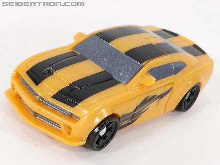
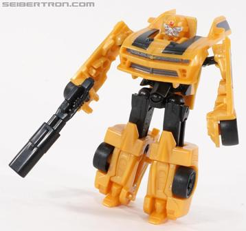
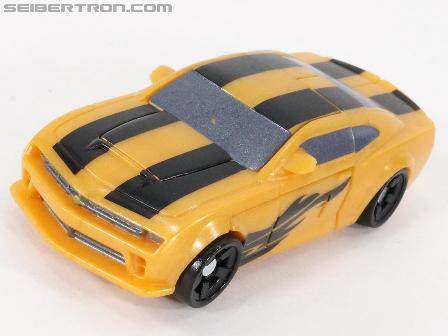
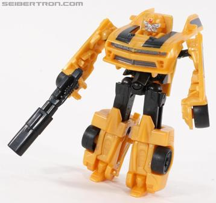
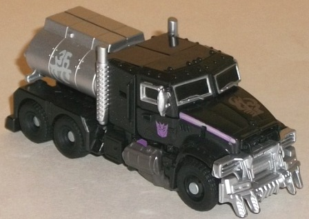
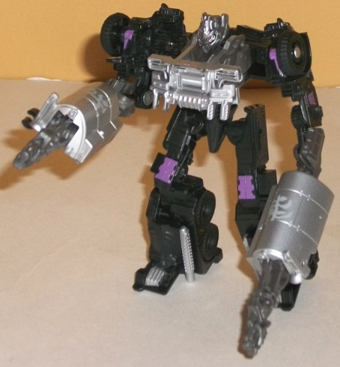

 
Allegiance : Autobot
Size : Legion
Difficulty of Transformation : Very Easy
Color Scheme : Sparkly dull yellow, black, and some silver and dull metallic silvery blue
Individual Rating : 7.5
 Bumblebee
vs. Megatron (Cyberglyph) [Target Exclusive]
Bumblebee
vs. Megatron (Cyberglyph) [Target Exclusive]
Set Price : $10 U.S.
(NOTE: Because this set is composed of repaints,
this is not a full-blown review. This mainly covers any changes made to
the set and the color scheme, and merely compares it to the original versions
of these molds. For a review on RotF Legends Bumblebee, go
here
.
For a review on the original DotM commander class Megatron, go
here
.)
 Bumblebee
Bumblebee


Allegiance
: Autobot
Size
: Legion
Difficulty of Transformation
: Very
Easy
Color Scheme
: Sparkly dull yellow,
black, and some silver and dull metallic silvery blue
Individual Rating
: 7.5
This is one of the many
store-exclusive redecos of Bumblebee that's sadly completely unneeded.
This mold has already been repainted and recolored to death, and the color
scheme here is barely any different than on most Bumblebees. The windows
are bit more of a silvery tint than on most Bumblebee toys, and there's
two stripes down his entire top like he has in Dark of the Moon. He also
has black "flame" paint apps behind each of his front wheels, but that's
about the only unique thing for this Bumblebee redeco.
There's been no mold
changes to this version of Bumblebee, except for the slight remolding of
one of his fists to hold Cyberverse weapons, as well as a two-part double-barreled
rifle accessory that, sadly, doesn't store in his vehicle mode.
(Bumblebee pics taken from Seibertron.com )
Megatron


Allegiance
: Decepticon
Size
: Commander
Difficulty of Transformation:
Easy
Color Scheme
: Black, silver, dark
metallic gray, and some light purple, dark red, metallic goldish silver,
and greenish off-white
Individual Rating
: 8.4
Megatron, on the other
hand, not only has a completely different color scheme than the mass release
versions of him, but it's also an homage to another Decepticon truck commander--
namely, Motormaster. The primarily black and silver color scheme is pretty
basic, but it gets the job done pretty effectively and the two colors contrast
well with each other. In robot mode, he's got a dark gray plastic that
takes the place of much of the silver, but it's got a bit of a metallic
swirl that makes it actually look rather nice (albeit not as great as the
painted silver, of course). In terms of accent colors, there's a bit of
light purple, which works VERY well with the black-- but it's barely used
at all, and it really would've made the toy look even better if used in
a couple more places. Like most of the other Target exclusive releases
for Dark of the Moon, Megatron also has a few silver and off-white "Cyberglyph
tattoos" on him, which help to add a little more visual variety. (Using
an off-white color for the Cyberglyphs on the silver paint was a nice idea,
so that his tank could have those tattoo paint apps as well.)
No mold changes have
been made to this version of Megatron.
This Target exclusive 2-pack has an excellent redeco of Megatron that looks really good even if you ignore the homage to Motormaster. Unfortunately, he comes with a barely-repainted Bumblebee which are a dime a dozen among store exclusive sets. HOWEVER, the price for this 2-pack is just about a dollar above getting Megatron by himself, so you're paying almost nothing for the Bumblebee-- I consider 'Bee to be just a little bonus. Mildly recommended if you don't have a version of this Megatron mold or just like his DotM design (it's not going to look any better than this).
Reviews by Beastbot